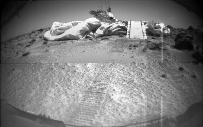
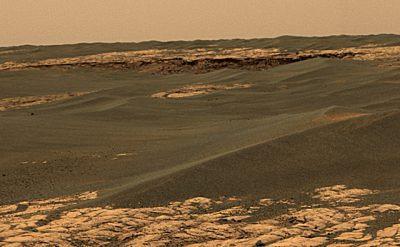
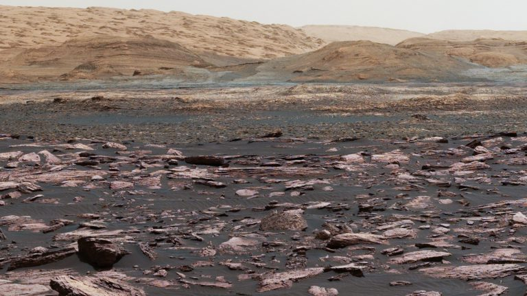

The first rover on Mars was a part of the Pathfinder mission. The rover, named Sojourner, landed in July 1997 at Ares Vallis using an airbag to cushion the fall. This first rover was equipped with an x-ray spectrometer and several cameras. The cameras showed images of rounded pebbles and cobbles upon landing, evidence for the groundbreaking discovery that there was likely once stable liquid water on Mars. The rover observed many dust devils as well. The mission lasted well-past its intended length of one week but ended several months later in September 1997, making it the shortest rover mission.
The next rovers to Mars were part of a collaborative mission and are known as the Mars Exploration Rovers (MERs). The two MER robots, Spirit and Opportunity, landed on Mars in 2004. They touched down on opposite sides of the planet at Gusev Crater and Meridiani Planum using airbags to cushion their fall, much like the Pathfinder mission. These rovers were equipped with cameras, several kinds of spectrometers, rock abrasion tools, and magnet arrays. The intent of the original 90-day mission plans for both of them was to investigate the presence of water and better understand the climate of Mars. The results from this mission have led some scientists to believe life may have been capable of living on Mars at one time. One of their discoveries was the presence of clay minerals that formed in neutral pH waters. They also found additional, reinforcing evidence that Mars once had liquid water at its surface including the presence of hematite, a mineral often formed in the presence of water. Another mineral discovered was jarosite, which only forms in acidic water, which on earth can sustain some more extreme forms of life. These rovers lasted long past their intended 90-days: Spirit was in operation for over 6 years before losing communications. Opportunity made it more than twice as long, lasting until 2018 before a dust storm caused it to lose communication with Earth.
While Opportunity was still roving around Mars, NASA launched the Curiosity rover in late 2011. It arrived at Mars in Gale Crater and, unlike previous rovers, Curiosity used a parachute to help significantly slow the descent and assist with the landing. Once on Mars in Gale Crater, the rover began utilizing its wide variety of instruments on board to explore the geological and chemical history of the region. Curiosity is equipped with cameras, spectrometers, radiation detectors, and environmental and atmospheric sensors. These instruments have allowed this rover to make some of the biggest discoveries about the Red Planet, especially relevant to its geological history. Sample Analysis at Mars (SAM) is an instrument that discovered evidence for organic carbon in some of the rocks of Mount Sharp, a central mountain within the crater. The radiation detectors on board also found the radiation levels on Mars from galactic cosmic rays and solar energy particles could cause detrimental health effects to future astronauts. This rover is still in operation today driving on Mount Sharp from a clay-rich region to a sulfate-rich region, and we look forward to seeing what new discoveries it makes.
